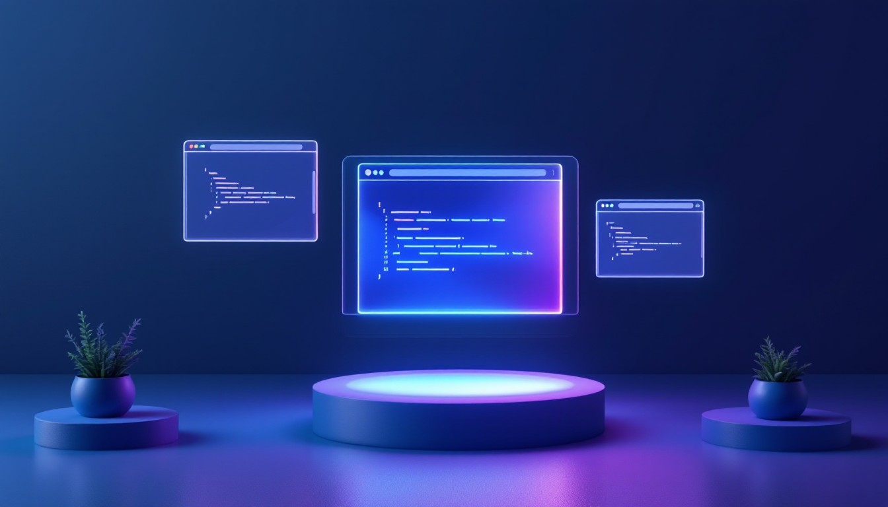

Introduction
I am a Cloud Computing Professional with expertise in AWS services and Linux systems administration.
Coming from a medical background, I successfully transitioned to IT in 2020 through the AWS re/Start
program, I have developed comprehensive knowledge in cloud technologies, automation, and DevOps
practices while maintaining AWS certifications.
My core competencies include Linux systems administration, scripting, automation, and Python
programming. I have extensive experience with essential DevOps tools. My technical expertise spans
networking, security, and various AWS services, allowing me to deliver robust cloud solutions.
I am characterized by my strong work ethic, dedication to excellence, and innovative problem-solving
abilities. I excel in high-pressure environments and approach challenges with thoroughness and
precision. My background in healthcare combined with technical expertise gives me a unique perspective
in understanding and meeting business needs.
At the core I am a life-long learner that enjoys being in the forefront of cloud innovative
technologies that simplify complex solutions. I love using my ever-growing skills to
experiment, build projects and find the best possible way to understand and explain cloud concepts
using simple illustrations that resonate with people.
Experience

Solutions Architect, Praesignis Randburg
Led the development of a highly available three-tier web architecture on AWS to handle
dynamic traffic while maintaining security and performance.
Created a comprehensive infrastructure using EC2, Aurora MySQL, and load balancers across
multiple availability zones.
Deployed a React.js frontend with Node.js backend, supported by automated scaling and
monitoring systems.
Established robust security through strategic IAM roles and security groups.
- VPC with 6 subnets across 2 availability zones
- Multi-AZ Aurora MySQL database
- Custom AMIs and launch templates for auto-scaling
- Comprehensive health monitoring system
- Multi-layered security configuration
Successfully delivered a production-ready system featuring high availability, automated
scaling, complete redundancy,
and secure access controls - all following AWS best practices. The solution demonstrated how
cloud technologies can
create adaptable, reliable infrastructure that scales with business needs.
Linux Systems Administration, Xgile I.T Johannesburg | Midrand
Virtualization Mastery: Orchestrating a Reliable Hybrid Environment
Led the deployment and management of a virtualized infrastructure supporting
multiple operating systems and business-critical applications, focusing on
performance optimization and resource efficiency.
Built a comprehensive virtualization platform supporting both Windows and Linux
systems, featuring automated deployment processes and robust monitoring
solutions. Established resource management policies and backup procedures to
ensure system reliability and optimal performance.
- Successfully integrated multiple operating systems in a unified environment
- Optimized resource allocation and utilization
- Reduced hardware costs through system consolidation
- Enhanced system reliability with proactive monitoring
- Implemented streamlined VM deployment processes
Delivered a cost-effective, high-performing hybrid environment that improved
operational efficiency while reducing hardware costs.
The solution provided the organization with the agility to adapt to changing
business needs while maintaining robust system
reliability and performance.
Projects to Github Repo

Certifications
Contact